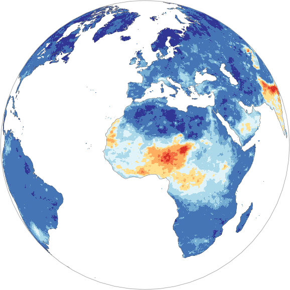
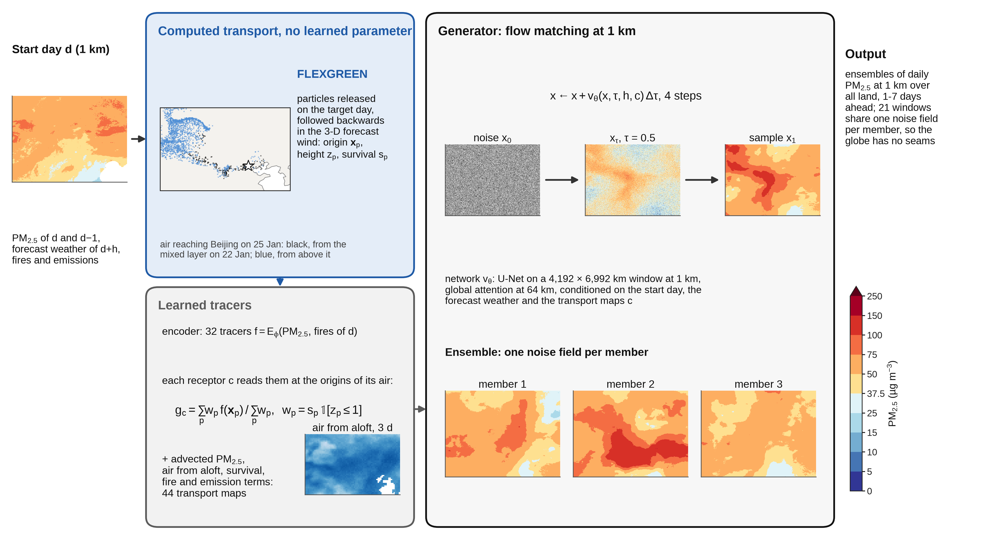
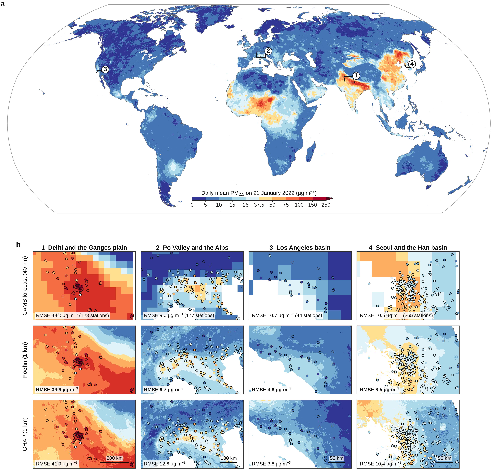
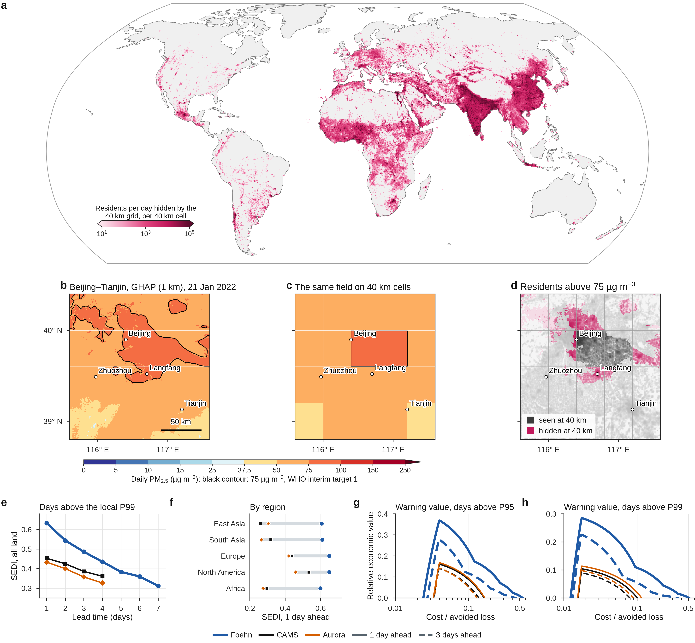
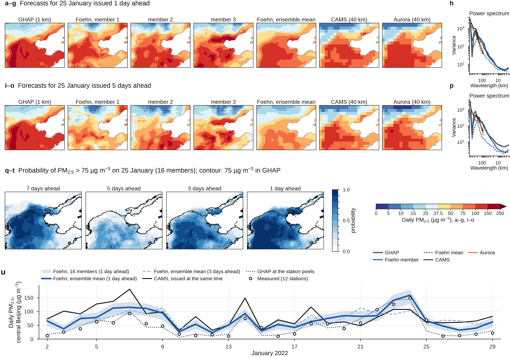

INAR Helsinki · LUT University · AMC-Lahti
Foehn
Global kilometre-scale probabilistic forecasts of fine particulate matter
Daily PM2.5 for every inhabited place on Earth at 1 km, from one day to a week ahead, as a calibrated ensemble. Foehn learns from the first global 1 km record of PM2.5, generates whole continents in one pass by flow matching, and computes rather than learns the transport of the air with FLEXGREEN, a GPU re-implementation of the backward mode of the FLEXPART particle model.

Foehn's forecast for 21 January 2022, issued the evening before (ensemble mean, 1 km).
Paper
Kheder A., Boy M. & Liu Z.-S. Global kilometre-scale probabilistic forecasts of fine particulate matter. Manuscript submitted, 2026.
About a million deaths a year follow days of high fine particulate matter: the short-term toll that daily forecasts and warnings exist to prevent. PM2.5 changes from one street to the next, yet it is measured at sparse stations and forecast on grids about 40 km wide. Two bottlenecks kept machine learning from forecasting it where it harms: resolution, and the peaks that squared-error training smooths away. Foehn removes both. It learns from the first global record of daily PM2.5 at 1 km with the operational weather forecast as input, generates whole continents at once by flow matching, and computes the transport of the air and of the emissions it meets with a particle model driven by the forecast wind. At 6,612 monitoring stations unused in training, it is more accurate than the operational Copernicus forecast issued at the same time at all its lead times, one to four days, and detects locally extreme pollution markedly better. It also reveals the exposure that coarse grids hide from millions of people every day.
How Foehn works
The PM2.5 that reaches a place is set by what the arriving air contained and by what happened to it on the way. Foehn separates the two.

FLEXGREEN: computed transport
Particles are released in every 0.5° land cell on the target day and followed backwards in the three-dimensional forecast wind, with turbulence and removal. The result is the Green's function of the transport: where the air was on the start day, at which height, and how much of its aerosol survived. No learned parameter.
Learned tracers
A small encoder turns the start-day maps into 32 latent tracers that every receptor reads at the origins of its particles: the network chooses what to transport, the physics decides where the air comes from.
Flow-matching generator
Conditioned on the 1 km fields of the start day, the forecast weather and the transport maps, a network carries a noise field to a 1 km forecast in four steps. Each noise field is one ensemble member; twenty-one continent-sized windows blend with no visible seam.
Interactive viewer
The forecasts of the three case studies of the paper, as issued: choose a case, a target day and how many days before the forecast was issued, and compare Foehn's ensemble with the 1 km reference estimates (GHAP, made after the fact) and the CAMS operational forecast issued at the same time. Every panel is a genuine output of the final model (16 members, 1 km); nothing is recomputed in the browser.


Figures



Code & data
| Code (MIT licence) | github.com/AmmarKheder/Foehn — FLEXGREEN, data preparation, training, calibration, inference, evaluation, and every figure of the paper. |
| Trained weights | Available to the editors and referees; released with a Zenodo DOI upon publication. |
| Target and inputs | GHAP daily 1 km PM2.5 (Wei et al., Zenodo); ECMWF IFS HRES forecasts (WeatherBench 2); ERA5; CAMS global forecasts and analyses, GFAS and CAMS-GLOB-ANT (Copernicus Atmosphere Data Store); GHS-POP population. |
| Evaluation stations | EEA, CNEMC, US EPA AQS, AirKorea, NIES Japan, CPCB India (partly through OpenAQ). Stations are used for evaluation only. |
Cite
@article{kheder2026foehn,
title = {Global kilometre-scale probabilistic forecasts of fine particulate matter},
author = {Kheder, Ammar and Boy, Michael and Liu, Zhi-Song},
year = {2026},
note = {Manuscript submitted}
}Questions and problems: GitHub issues · ammar.kheder@lut.fi